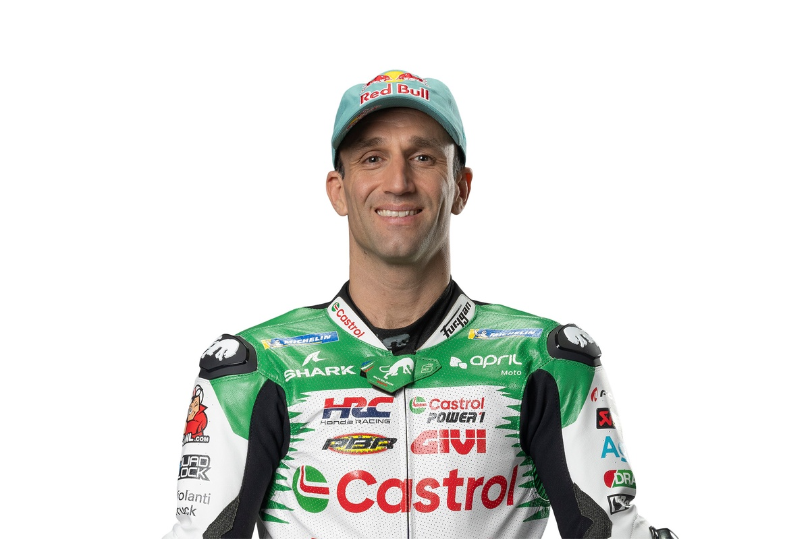

Johann Zarco es un piloto de motociclismo francés. Es dos veces campeón del Campeonato del Mundo de Motociclismo de Moto2 en 2015 y 2016, y subcampeón de 125cc en 2011.

Fecha de nacimiento: 16/07/1990
Lugar de nacimiento: Cannes
Altura: 171 cm
Peso: 68 kg
Moto: Honda
Dorsal: 5
Comenzó en el motociclismo desde muy joven y destacó rápidamente en las categorías inferiores. Tras brillar en 125cc y Moto2, donde fue campeón mundial en dos ocasiones, dio el salto a la categoría reina de MotoGP en 2017.
Equipos en los que ha participado
Monster Yamaha Tech3 (2017-2018)
Red Bull KTM Factory Racing (2019)
LCR Honda (2019)
Esponsorama Racing / Avintia Ducati (2020)
Pramac Racing (Ducati) (2021-2023)
LCR Honda (2024-actualidad)
A lo largo de su carrera ha demostrado ser un piloto muy competitivo y constante. Aunque no ha conseguido todavía un título en MotoGP, ha sumado varias victorias y podios que lo han consolidado como uno de los pilotos franceses más exitosos de la historia.
Conceptos de MotoGP
Chicane
Parte de la pista diseñada específicamente para reducir la velocidad mediante curvas cerradas.
Pole
Primera posición en la parrilla de salida, lograda por el piloto más rápido en la clasificación.
Tacómetro
Instrumento que mide las revoluciones por minuto (RPM) del motor.
Control de tracción
Sistema electrónico que evita que la rueda trasera pierda adherencia al acelerar.
Box
Área donde se prepara y mantiene la moto antes y durante las carreras.
Johann Zarco es también reconocido por su personalidad tranquila fuera de la pista, lo que contrasta con su estilo agresivo de pilotaje. Su capacidad para adaptarse a diferentes motos y equipos lo ha mantenido competitivo en la máxima categoría.